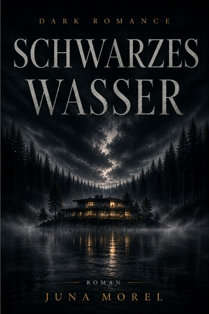

Roman
Schwarzes Wasser
Dark Romance aus den österreichischen Bergen
Die Journalistin Lena Vargas soll die Biografie des zurückgezogenen Unternehmers Nikolaj Voss schreiben und reist zu seinem Anwesen an einem abgelegenen See in den österreichischen Bergen. Sie stößt auf Widersprüche und verschwiegene Fragen, und zwischen beiden entsteht eine Nähe, die niemand geplant hat. Ein atmosphärischer Dark-Romance-Roman über Vertrauen und Geheimnisse.
E-Book 5,99 €Taschenbuch 19,99 €
Erhältlich als E-Book & Taschenbuch
E-Book: ISBN 978-3-565478-26-2 · Taschenbuch: ISBN 978-3-565478-27-9